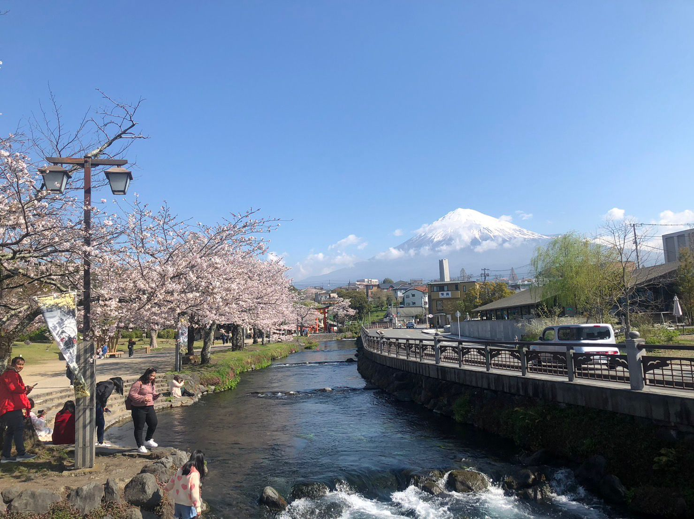
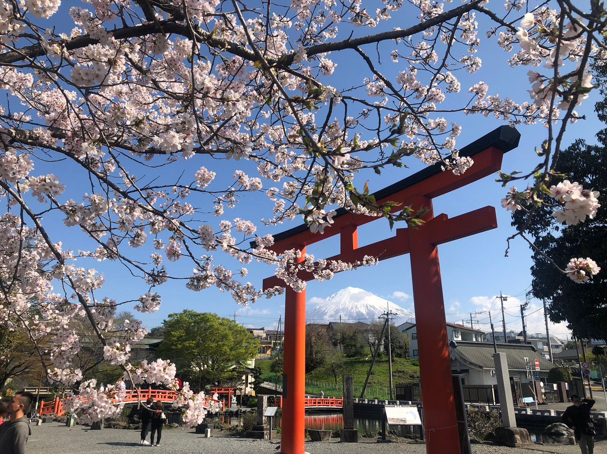

TKO Radio is a weekly Japanese culture podcast hosted by Pdubz from Canada and Beautiful from the USA (Yes these are not our real names) where we talk about all things Japan related from anime, current events, personal life updates, travel tips, and just shits and giggles.
1 / 3

"I listen to this podcast on my drive to work regulary and these two never fail to make me laugh. I learn a lot about their lives and what life is like in Japan. Keep up the good work!"
- Jake
2 / 3

"I love the interviews they have on the show from time to time. You guys need to get more people on"
- Stephanie
3 / 3
"Even though I have lived in Japan for over 10 years, listening to their experiences makes me realize there is always something new going on here. I guess my next stop is checking out Shizuoka "
- Liam
❮
❯